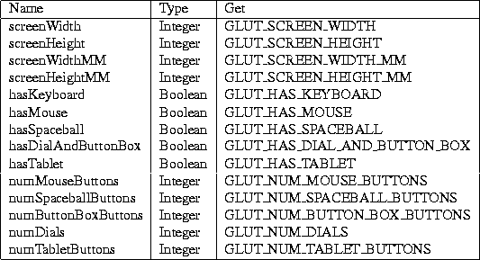

Next:
A.3 Window State
Up:
A.2 Global State
Previous:
A.2.1 Program Controlled State
A.2.2 Fixed System Dependent State

Next:
A.3 Window State
Up:
A.2 Global State
Previous:
A.2.1 Program Controlled State
Mark Kilgard
Fri Feb 23 08:05:02 PST 1996